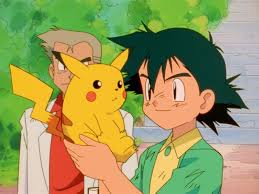
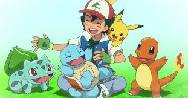

Ash's Pokemon In Kanto
Ash Ketchum is in possession of a fairly large number of pokemon. Over his career He has had about 102 different species under his care. This website will list several pokemon which he acquired over his journey through pokemons many regions.
Pikachu
Pikachu is the Mouse Pokemon. It was the first pokemon Ash aquired on his journey. It was given to him by Professor Oak in the first episode of the pokemon animated series. It was a part of his team of pokemon all 25 years he was the main protagonist of the pokemon anime. This pikachu refuses to be put into its pokeball. This pikachu is Ash's best friend.

The Kanto Starters
Ash during his journey befriended all three members of kanhto's starter pokemon trio: Bulbasaur, Charmander, and Squirtle. They are the Seed, Lizard, and Tiny Turtle pokemon respectively. They are each first encountered on different episodes. Charmander is the only one of these three that ends up evolving into its finally form, Charizard. Charizard is the Flame pokemon. It was left to train for a prolonged period of time after Ash had difficulties getting Charizard to listen to him.
